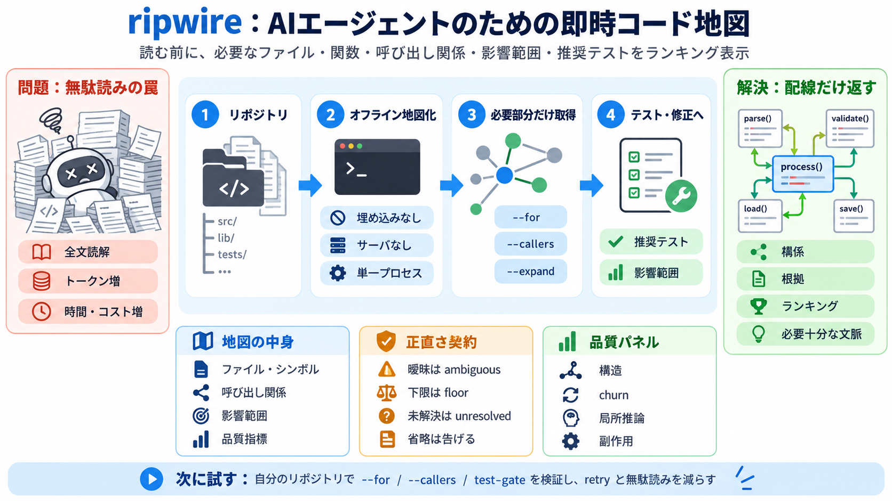

ripwire — Claude MCP Server | Claude Code Marketplace
On mid-task questions it had never seen, ripwire answers at 5.0% of what a grep-and-read pass spends — 5.2% on the quest…

LLM/コーディングエージェントが「読む前」に、必要なファイル・関数・呼び出し関係・影響範囲・推奨テストを、ランキング付きで提示するCLIです。
従来は検索→ファイルを開いて全文読解になりやすく、コンテキスト（トークン）と時間、コストが膨らみがちです。
ripwireは埋め込み（embeddings）なし・インデックスサーバなし・ダーモンなし・単一プロセスで、リポジトリを高速に「地図化」します。
全文ではなく「呼び出し関係や影響範囲など、必要な要素だけを配線として返す」ことで、エージェントの消費を下げます。
ripwireは、関係と根拠の足場になる情報を、ランキング付きでまとめます。
単なる宣伝ではなく、フラグ別に「どの情報粒度を返すか」を制御し、ナイーブ読解と比較する設計で語っています。
曖昧さや欠落をラベリングし、「無いこと＝断定しない」「省略＝省略を告げる」を徹底します。
単一ランキングにせず、複数の観点（構造・命名・構文イディオム・churn・副作用など）で候補を二次確認します。
READMEではMCPサーバを必須にせず任意（opt-in）にし、セッション文脈コスト増を避ける思想が述べられています。
README中心の情報のため、提示された性能や削減が他リポジトリでも同程度かは不確実です。動的挙動やマクロ展開など、名前ベースのコールグラフで見えにくい経路も残り得ます。
導入するなら、あなたのリポジトリで --for / --callers / test-gate 等を試し、どの質問で再試行が増えるかを観察するのが筋です。
On mid-task questions it had never seen, ripwire answers at 5.0% of what a grep-and-read pass spends — 5.2% on the quest…
Repowise indexes a repository once and rebuilds incrementally on every commit, exposing five intelligence layers to AI a…
fits your workflow. Round seven, performance and token efficiency. This is Codebase Memory MCP's strongest differentiato…
## Thanh Hoang's Post ### Thanh Hoang 2h · The ripgrep of AI context: a zero-dependency C++23 CLI + MCP server givin…
Table 6 summarizes the head-to-head comparison. The MCP Agent achieves 90% of the Explorer Agent’s quality score while c…